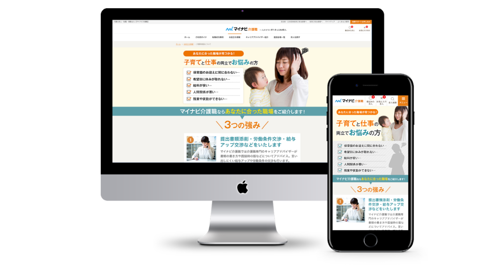

WORKS
制作物

特集ページ制作
Designe / Cording / Direction
- 概要
- 介護職向け求人特集ページの企画・デザイン・コーディングを担当。 営業担当へのヒアリングを通じてターゲットや訴求内容を整理し、構成設計からデザインまで一貫して対応。クライアントのレギュレーションを踏まえ、子育てと仕事の両立を目指す主婦層に情報が伝わりやすい構成と、安心感のあるデザインを意識して制作した。
- 使用ツール
- Figma ・ Photoshop ・ VisualStudioCode
- 制作期間
- 12時間
- 対応範囲
- ディレクション ・ 要件ヒアリング ・ コンテンツ企画 ・ 情報設計 ・ ワイヤーフレーム作成 ・ デザイン（PC/SP） ・ UIデザイン ・ 品質管理